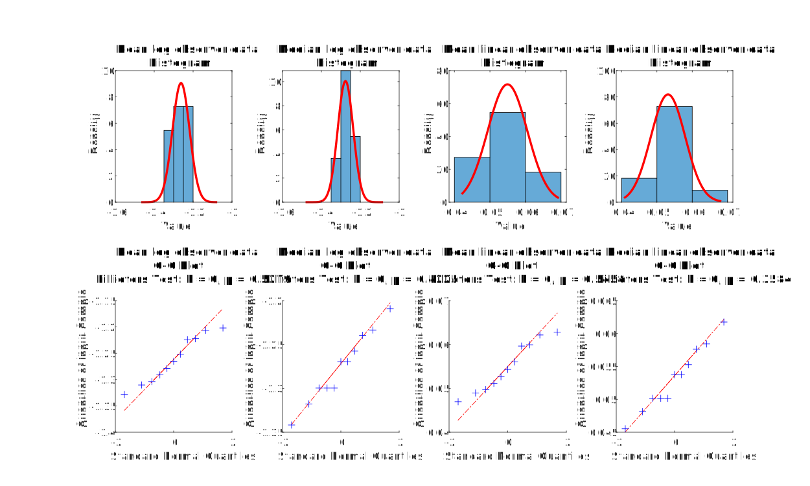
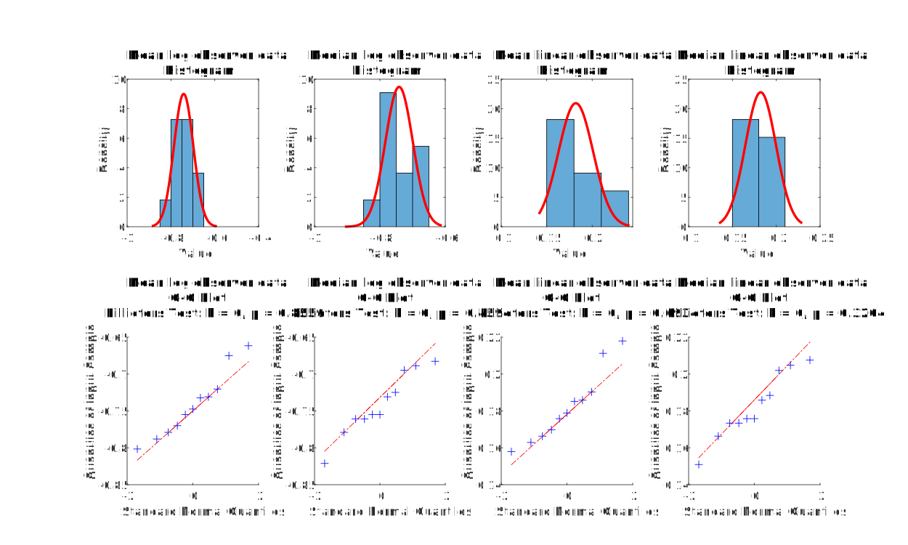

Experiment 2 - Condition-wise Data Analysis
Figure . Condition: Col 1, cpd 2, c_base 0.3, Y_fg 1, Y_amb 2.010
Figure . Condition: Col 1, cpd 2, c_base 0.3, Y_fg 1, Y_amb 4.806
Figure . Condition: Col 1, cpd 2, c_base 0.3, Y_fg 10, Y_amb 12.010
Figure . Condition: Col 1, cpd 2, c_base 0.3, Y_fg 10, Y_amb 55.690
Figure . Condition: Col 1, cpd 2, c_base 0.3, Y_fg 100, Y_amb 442.711
Figure . Condition: Col 1, cpd 2, c_base 0.8, Y_fg 1, Y_amb 2.010
Figure . Condition: Col 1, cpd 2, c_base 0.8, Y_fg 1, Y_amb 15.276
Figure . Condition: Col 1, cpd 2, c_base 0.8, Y_fg 10, Y_amb 13.010
Figure . Condition: Col 1, cpd 2, c_base 0.8, Y_fg 10, Y_amb 160.379
Figure . Condition: Col 1, cpd 2, c_base 0.8, Y_fg 100, Y_amb 98.011
Figure . Condition: Col 1, cpd 4, c_base 0.3, Y_fg 1, Y_amb 2.010
Figure . Condition: Col 1, cpd 4, c_base 0.3, Y_fg 1, Y_amb 5.794
Figure . Condition: Col 1, cpd 4, c_base 0.3, Y_fg 10, Y_amb 14.010
Figure . Condition: Col 1, cpd 4, c_base 0.3, Y_fg 10, Y_amb 79.973
Figure . Condition: Col 1, cpd 4, c_base 0.3, Y_fg 100, Y_amb 108.011

Figure . Condition: Col 1, cpd 4, c_base 0.3, Y_fg 100, Y_amb 587.069
Figure . Condition: Col 1, cpd 4, c_base 0.8, Y_fg 1, Y_amb 2.010
Figure . Condition: Col 1, cpd 4, c_base 0.8, Y_fg 1, Y_amb 21.424

Figure . Condition: Col 1, cpd 4, c_base 0.8, Y_fg 10, Y_amb 15.010
Figure . Condition: Col 1, cpd 4, c_base 0.8, Y_fg 10, Y_amb 224.758
Figure . Condition: Col 1, cpd 4, c_base 0.8, Y_fg 100, Y_amb 112.011
Figure . Condition: Col 2, cpd 2, c_base 0.07, Y_fg 1, Y_amb 1.010
Figure . Condition: Col 2, cpd 2, c_base 0.07, Y_fg 10, Y_amb 14.010
Figure . Condition: Col 2, cpd 2, c_base 0.07, Y_fg 100, Y_amb 101.011
Figure . Condition: Col 2, cpd 2, c_base 0.1, Y_fg 1, Y_amb 2.010
Figure . Condition: Col 2, cpd 2, c_base 0.1, Y_fg 10, Y_amb 15.010
Figure . Condition: Col 2, cpd 2, c_base 0.1, Y_fg 100, Y_amb 104.011
Figure . Condition: Col 3, cpd 2, c_base 0.3, Y_fg 10, Y_amb 12.010

Figure . Condition: Col 3, cpd 2, c_base 0.3, Y_fg 100, Y_amb 96.011
Figure . Condition: Col 3, cpd 2, c_base 0.8, Y_fg 1, Y_amb 2.010
Figure . Condition: Col 3, cpd 2, c_base 0.8, Y_fg 10, Y_amb 15.010

Figure . Condition: Col 3, cpd 2, c_base 0.8, Y_fg 100, Y_amb 109.011